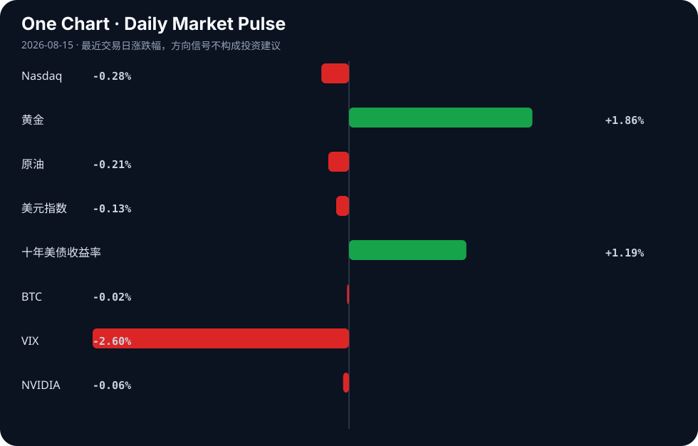

Daily Intelligence
2026-08-15｜Saturday
Today’s Thesis｜今日一句话
AI 商业化的下一道门槛不是继续增加能力，而是把能力变成可审计、可重复、可承担责任的工作流；市场仍愿意为增长付费，但利率与黄金的组合提醒我们，叙事必须尽快兑现为效率和现金流。[A2][A4][A9][A17]
① Executive Summary｜30 秒
1. AI：人类在环、知识图谱与结构化反馈工具同时出现，行业价值重心正从“模型展示”移向“可信交付”。[A2][A3][A21]
2. 商业：AI 支出持续增加但盈利仍被质疑，金融机构也开始强调智能体落地的治理门槛；利润兑现将决定资本是否继续追逐能力。[A4][A9][A17]
3. 宏观：纳指小幅回落、十年美债收益率上行，而黄金明显走强；这更像成长资产面对贴现率与不确定性同时上升的再定价。
② AI Daily
1. “人类在环”重新成为核心设计 [A2]
What Happened
材料讨论护理助理实践中 AI 与隐形人类监督的关系，提示真实工作流并非简单的人机替代。[A2]
Why It Matters
高风险行业的昂贵部分不是一次回答，而是错误如何被发现、责任如何被追踪。人类复核若能被明确放在高损失节点，就可能把 AI 从实验工具变成正式流程。
Second-order Effect
任务被拆成可观察节点 → 人类集中复核高风险决策 → 低风险环节自动化 → 组织重新定义岗位与责任。[A2]
2. Agent 工具开始争夺上下文控制权 [A3][A21]
What Happened
一项工具让代理通过命令行管理知识图谱；另一项工具把文本、截图和网页反馈整理成可追踪会话。[A3][A21]
Why It Matters
代理表现不只取决于模型能力，也取决于上下文是否结构化、反馈是否可回溯。最后 10% 的修订与验收往往比初稿更消耗组织时间。
Second-order Effect
反馈结构化 → 代理更少重复犯错 → 验收成本下降 → 工作流数据沉淀为新的产品壁垒。[A3][A21]
3. 资本开支与盈利开始正面碰撞 [A4][A17]
What Happened
材料一方面称 AI 支出继续激增但盈利遥远，另一方面报道 Anthropic 销售增长并可能接近季度盈利；两者均需回到原始财务口径核验。[A4][A17]
Why It Matters
市场开始从“投入多少”转向“每单位投入产生多少收入与现金流”。这会筛选能控制推理成本、形成留存和稳定收费的公司。
Second-order Effect
资本开支上升 → 盈利门槛提高 → 客户与投资者要求成本透明 → 资金向可验证单位经济集中。[A4][A17]
③ Business Daily
金融｜智能体进入治理阶段
金融业材料把落地问题概括为多重关口，说明权限、数据、审计和责任比演示效果更关键。[A9] 真正的商业机会可能在控制面，而不只是模型调用。
医疗｜辅助而非无条件替代
护理实践中的“人类在环”说明，医疗 AI 的价值来自更好地分配注意力，同时保留专业人员对高风险结果的责任。[A2]
安全｜并购整合加速
Datavault AI 被报道拟收购 CyberCatch，把 AI 网络安全纳入量子安全平台。[B13] 协同能否兑现，仍需观察客户、收入与产品整合。
消费｜银发需求从数量转向体验
34.6 亿人次出游材料强调银发群体“重康养、追体验”。[B3] 这提示线下服务、信任与产品适配可能比单纯获客更重要。
④ Macro Observation｜机制分析
世界正在发生什么？成长叙事仍有韧性，但资产信号分化：纳指与 NVIDIA 接近持平，十年美债收益率上行，黄金上涨，VIX下降。事实只能确认价格变化；“避险与风险偏好并存”仍是解释。
为什么发生？一种可能机制是投资者认可 AI 的长期生产率故事，同时要求更快的利润证明。利率上行提高远期现金流贴现率，黄金上涨反映对不确定性或通胀尾部风险的需求，低 VIX 则说明尚未形成广泛恐慌。
资本如何流动？能力叙事 → 资本开支增长 → 盈利验证压力上升 → 资金从宽泛概念转向能证明收入、治理与成本控制的环节。[A4][A9][A17] 估值越高，兑现要求越快；兑现越慢，融资成本越可能反过来压缩创新预算。
接下来关注什么？关键不是单日价格，而是企业是否把审计、反馈和责任写进合同，以及相关收入能否覆盖算力和实施成本。
⑤ Signal Dashboard
| 指标 | 最新值 | 今日 | 信号 |
|---|---|---|---|
| Nasdaq | 26,729.16 | ↓ -0.28% | 中性 |
| 黄金 | 4,461.80 | ↑ +1.86% | 避险/通胀对冲增强 |
| 原油 | 82.23 | ↓ -0.21% | 供需平衡 |
| 美元指数 | 99.54 | ↓ -0.13% | 中性 |
| 十年美债收益率 | 4.70 | ↑ +1.19% | 成长估值承压 |
| BTC | 63,010.36 | ↓ -0.02% | 中性 |
| VIX | 14.25 | ↓ -2.60% | 风险偏好改善 |
| NVIDIA | 225.16 | ↓ -0.06% | 中性 |
⑥ Deep Insight
一个容易被忽略的变化是，AI 的稀缺性正在从“智能本身”迁移到“组织接受智能的能力”。模型越普及，企业越不缺演示，越缺的是把输出放进真实责任链的机制：谁批准、谁复核、错误如何回滚、数据能否追踪、成本是否可控。人类在环、知识图谱和结构化反馈工具看似分散，实质上都在解决同一问题——把概率型输出变成可管理的生产过程。[A2][A3][A21]
这会改变价值捕获的位置。能力领先仍能获得流量，但长期利润可能更多落在掌握客户流程、权限与反馈闭环的产品上。金融机构的治理关口说明，工作流并不是模型外面的包装，而是采用本身。[A9] 对资本而言，下一阶段不应只问“模型进步多快”，还要问每单位推理是否产生可计量收益、客户是否持续使用、错误成本由谁承担。[A4][A17]
第二层影响是组织设计。若 AI 被嵌入核心流程，管理者需要把任务拆成可观察节点，把隐性经验变成评估标准，把人类复核放在高损失环节。这可能先增加成本，因为企业要建设日志、权限和质量控制；但一旦形成闭环，边际交付成本才可能下降。因此“先治理后提效”看似拖慢采用，实际上可能是规模化的前提。
更深一层看，这种转变还会改变人才结构：能把业务目标翻译为评估集、异常处理规则和升级路径的人，会成为模型与一线团队之间的关键接口。组织若只购买模型而不建设这层能力，就容易把自动化速度误当成生产率，并在错误积累后支付更高的返工成本。
反方观点是，用户最终只会选择能力最强、价格最低的模型，治理层会被平台原生功能商品化。这个判断成立的条件是，不同行业的责任链高度相似，且平台能快速覆盖本地法规与流程差异。我们的判断可被证伪：若未来企业采购仍主要按模型榜单决策，治理工具无法形成独立预算，行业应用留存也没有显著改善，那么价值向工作流迁移的论点就需要下调。
⑦ Tomorrow Watch
1. 验证企业 AI 合同是否明确包含审计、权限与成本上限。[A9]
2. 关注护理 AI 是否公布可量化的安全结果。[A2]
3. 追踪结构化反馈工具能否显著降低返工时间。[A21]
4. 比较十年美债收益率与成长股表现是否继续背离。
5. 核实 AI 盈利叙事是否获得统一财务口径支持。[A17]
⑧ One Chart

黄金显著走强、十年美债收益率上行，而主要风险资产变化有限。它提示市场同时定价多种风险，但不能仅凭同日相关性推断因果。
⑨ Quote of the Day
“The big money is not in the buying and selling, but in the waiting.”
— Charlie Munger
中文理解：真正的大钱往往不来自频繁买卖，而来自有判断后的耐心等待。
Why it matters today：当 AI 叙事与盈利验证存在时间差，纪律比频繁追逐标题更重要。
⑩ Action Items｜今天值得思考什么
1. 关注哪些 AI 产品已经进入正式责任流程。
2. 验证能力提升是否转化为客户留存和单位经济改善。
3. 比较通用模型与行业工作流的不同壁垒。
4. 追踪利率变化对成长资产估值的持续影响。
5. 思考什么证据会推翻“价值向工作流迁移”的判断。
信息边界
本期为手动补生成，使用已归档来源与市场数据；不少材料只有聚合标题或摘要，未逐篇核验原文。归档来源存在补跑时效偏移，正文只把较晚材料作为机制验证线索，不把它们倒记为 15 日发生的事实。市场数据为最近可得交易日数据，不构成投资建议。
Sources
AI
- A2：The Invisible Human-in-the-Loop: An Evolutionary Concept Analysis of Artificial Intelligence in Nursing Assistant Practice - Cureus — Google News · AI
- A3：The CLI your AI agent drives to manage your knowledge graph — Hacker News · AI
- A4：什么信号？高盛辣评Q2财报：AI支出持续激增，但盈利仍遥遥无期！ - 搜狐网 — Google News · AI 中文
- A9：金融业深度运用AI智能体要闯过四关 - 新浪网 — Google News · AI 中文
- A17：打破AI烧钱魔咒！Anthropic销售额暴增 有望迎来首个季度盈利 - 财联社 — Google News · AI 中文
- A21：Show HN: Remarc – provide more contextual and structured feedback to AI agents — Hacker News · AI
Business & Macro
- B3：34.6亿人次出游大数据：银发族“重康养、追体验”，2026上半年文旅洞察 - AgeClub — Google News · 行业
- B13：Datavault AI To Acquire CyberCatch For $94.5 Million To Add AI-Powered Cybersecurity To Quantum-Secured Platform - Pulse 2.0 — Google News · Technology Business